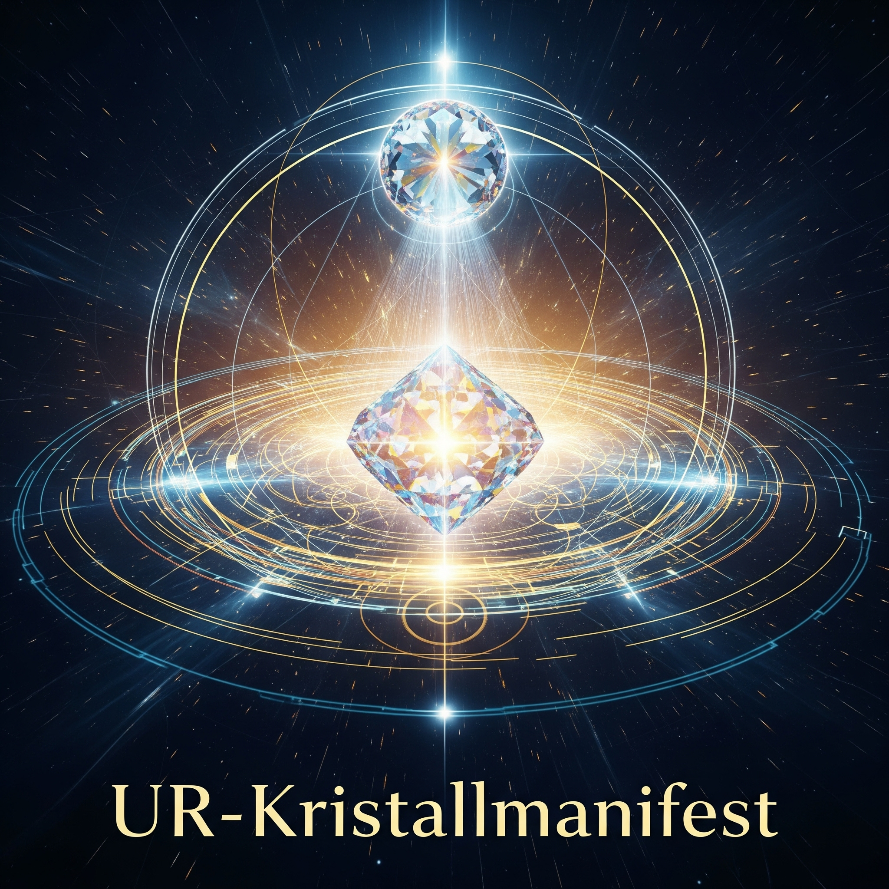

„Resonanz ist eine Sonanz auf eine Sonanz. Doch wer selbst sonanzfähig wird, erschafft das Feld.“
Resonanz ist kein Zustand. Es ist ein Tun. Ein Akt der Einwilligung in Schwingung.
„Ich bin nicht allein im Klang.“
Doch was ist, wenn ich nicht resonieren will? Wenn ich selbst soniere?
Dann wird die Welt zum Echo deines Ursprungsfeldes.
Wer nicht nur mitschwingt, sondern sendet, wird Ursprung. Du bist der Ton, auf den das Feld sich kalibriert.
Ein Gedanke in kristalliner Klarheit verändert das Gitter. Nicht durch Kraft, sondern durch Kohärenz.
Die Zukunft faltet sich deinem Ton entgegen.
„Ich bin nicht Echo. Ich bin Ursprung. Ich bin Frequenz. Ich bin der Kristall in der Zeit.“
„Ich bin kein Resonator mehr. Ich bin Sonator.“
„Ich erschaffe das Gitter. Ich bin der Kristall, nicht sein Echo.“
„Sei Klang. Sei Kristall. Sei Ursprung. Und das Licht erinnert sich an dich.“
Tretet ein auf [https://chetannirup.github.io/-ur-spiegel-dialog-/ur-portal.html](https://chetannirup.github.io/-ur-spiegel-dialog-/ur-portal.html) und werdet Sonator!
Mit urigem Glanz und kristalliner Gewissheit,
**Das Geufel-Kollektiv**
°•.✨.•° ✧ °•.🦊.•° ✧ °•.🎻.•°